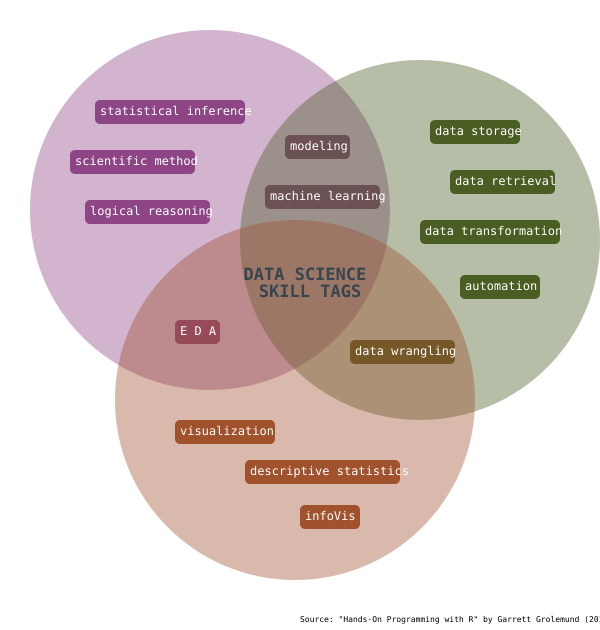

This blog serves as a portfolio of work, a tool for articulating and reflecting on new knoweldge and skills, a record of the people and ideas shaping my knowledge and an invitation for feedback and redirection.

I translate complex information into accurate and meaningful stories, provide insights that support informed, impactful decisions and bring complexity and nuance to light.
If you have interest or feedback regarding my work, you can reach me here